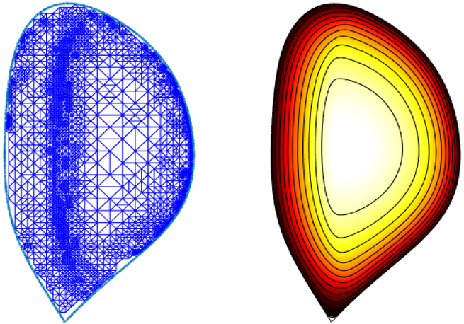
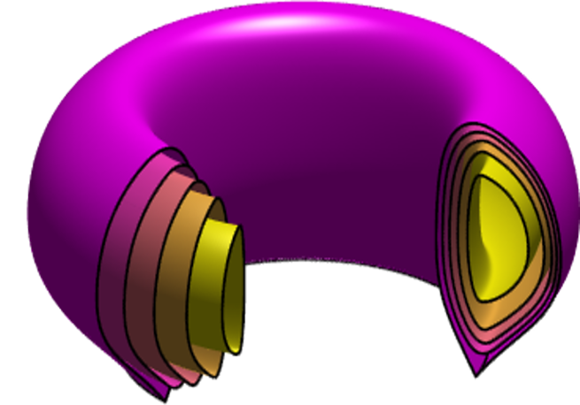
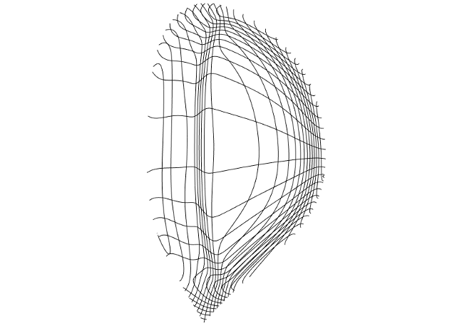

About Me
Research overview
My main research interests lie in the areas of numerical analysis, scientific computing and computational physics. Currently I work developing numerical methods for problems arising in the computational simulation of magnetically confined plasmas. I have also interest in the application of integral equation techniques for the study of time domain wave propagation, in the applications and theoretical development of the Boundary Element Method (BEM) and the Hybridizable Discontinuous Galerkin Method (HDG), and in formulations that involve the coupling of integral and partial differential equations.
My detailed resume can be downloaded below
Funding
- 2021-2023, NSF-DMS-2137305 "LEAPS-MPS: Hybridizable discontinuous Galerkin methods for non-linear integro-differential boundary value problems in magnetic plasma confinement". Single PI, USD $250,000.
Short Bio
I was born and raised in Mexico City. I got a B.Sc. in Physics (under the supervision of Iouri N. Skiba ) and a M.Sc. in Mathematics (under the supervision of Antonio Capella) both from the National Autonomous University of Mexico (UNAM). I graduated with a Ph. D. in Applied Mathematics from the University of Delaware, where I studied under the supervision of the late Francisco-Javier Sayas. Between 2016 and 2020 I was a Postdoctoral Associate at the Courant Institute of Mathematical Sciences, where my mentor was Antoine Cerfon.
Broadening STEM
I am commited to broadening the workforce in Science Technology Engineering or Mathematics (STEM). If you have an interest in the mathematical sciences in particular (or in science and engineering in general) but you somehow feel that "you don't belong" please reach out to me. I will be happy to talk about the possibilities available for you and my own personal experiences.
I am currently a faculty mentor for the MΔth Alliance, a nationwide effort to make sure that every student with an interest in mathematics has the opportunity and the necessary tools to earn a doctoral degree. You can check my mentor profile and learn more about the MΔth Alliance here.
In 2018, as part of the Hispanic Heritage Month celebration of the contributions of Latinx and Hispanic mathematicians, I was featured by lathisms.org as a prominent early-career Hispanic mathematician. I am humbled and thankful for the honor.



Publications
In mathematics, refereed journal articles are considered the main vehicle of dissemination of original research. Because of the nature of mathematical research, authors are considered on equal footing and are always listed in alphabetical order. In other words, as opposed to other disciplines, there is no "first author".
Articles and pre-prints
- "An unfitted HDG discretization for a model problem in shape optimization".
With Esteban Henríquez and Manuel Solano (Submitted, 2025)(arXiv: 2509.22724) - "Well--posedness for the biharmonic scattering problem for a penetrable obstacle".
With Rafael Ceja Ayala and Isaac Harris (Submitted, 2025)(arXiv: 2506.10176) - "A coupled HDG discretization for the interaction between acoustic and elastic waves ".
With Fernando Artaza-Covarrubias and Manuel Solano (Submitted, 2025)(arXiv: 2505.15106) - "A symmetric boundary integral formulation for time-domain acoustic-elastic scattering".
(Computational Mechanics, 2025)(arXiv: 2501.08482) - "Surrogate-based multilevel Monte Carlo methods for uncertainty quantification in the Grad-Shafranov free boundary problem".
With Howard Elman and Jiaxing Liang (Submitted, 2025)(arXiv: 2501.08482) - "A boundary integral equation formulation for transient electromagnetic transmission problems on Lipschitz domains".
(ESAIM: Mathematical Modelling and Numerical Analysis, Volume 59, Number 3, May-June 2025 pp.1729–1745. doi: 10.1051/m2an/2025036 )(arXiv: 2407.05823) - "Boundary-field formulation for transient electromagnetic scattering by dielectric scatterers and coated conductors".
With George Hsiao and Wolfgang Wendland (SIAM Journal on Mathematical Analysis, Vol 57 No. 2, 2025)(arXiv: 2406.05367) - "Multilevel Monte Carlo methods for the Grad-Shafranov free boundary problem".
With Howard Elman and Jiaxing Liang (Computer Physics Communications Vol. 298, 2024, 109099) (arXiv: 2306.13249) - "A boundary-field formulation for elastodynamic scattering".
With George Hsiao and Wolfgang Wendland (Journal of Elasticity, Vol. 153, No. 1, pp. 5-27,December 2022) (arXiv: 2206.12587) - Afternote to Coupling at a distance: convergence analysis and a priori error estimates .
With Nestor Sánchez and Manuel Solano (Computational Methods in Applied Mathematics, vol. 22, no. 4, 2022, pp. 945-970. doi:10.1007/s10915-022-01767-1) (arXiv: 2201.01395) - "Surrogate Approximation of the Grad-Shafranov Free Boundary Problem via Stochastic Collocation on Sparse Grids".
With Howard Elman and Jiaxing Liang (Journal of Computational Physics, 448 (2022), paper No. 110699. doi: 10.1016/j.jcp.2021.110699) (arXiv: 2105.12217) - "Error analysis of an unfitted HDG method for a class of non-linear elliptic problems".
With Nestor Sánchez and Manuel Solano (Journal of Scientific Computing (90), 92, 2022). (arXiv: 2105.03560) - "Time-Dependent Wave-Structure Interaction Revisited: Thermo-piezoelectric Scatterers".
With George Hsiao. (Fluids, 6(3), 2021. doi: 10.3390/fluids6030101) (arXiv: 2102.04118) - "Boundary integral formulations for transient linear thermoelasticity with combined-type boundary conditions".
With George Hsiao (SIAM Journal on Mathematical Analysis 53(4), 3888 53(4), 3888–3911, 2021. doi: 10.1137/20M1372834) (arXiv: 2010.04909) - "A priori and a posteriori error analysis of an unfitted HDG method for semi-linear elliptic problems".
With Nestor Sánchez and Manuel Solano (Numerische Mathematik. Vol.148 (4), pp.919–958 (2021). doi: 10.1007/s00211-021-01221-8). (arXiv:1911.12298) - "Adaptive hybridizable discontinuous Galerkin discretization of the Grad-Shafranov equation by extension from polygonal subdomains".
With Antoine Cerfon and Manuel Solano (Computer Physics Communications, Vol. 255, pp.107239, 2020. doi: 10.1016/j.cpc.2020.107239) (arXiv:1903.01724) - "Time-domain boundary integral methods in linear thermoelasticity".
With George Hsiao (Dedicated to the memory of Francisco-Javier Sayas) (SIAM Journal of Mathematical Analysis, 52(3),2463-2490, 2020. doi: 10.1137/19M1298652). (arXiv:1910.04884) - "A Hybridizable Discontinuous Galerkin solver for the Grad-Shafranov equation".
With Manuel Solano (Computer Physics Communications. Vol. 235, pp 120-132, 2019. doi: 10.1016/j.cpc.2018.09.013). (arXiv:1712.04148) - "A time-dependent wave-thermoelastic solid interaction".
With George Hsiao, Francisco-Javier Sayas, and Richard Weinacht (IMA Journal of Numerical Analysis, 39(2):924–956, 04 2018. doi: 10.1093/imanum/dry016). (arXiv:1609.06330) - "Pseudo-spectral collocation with Maxwell polynomials for kinetic equations with energy diffusion".
With Antoine Cerfon (Plasma Physics and Controlled Fusion. 60(2): 025018, 2018. doi: 10.1088/1361-6587/aa963a) (arXiv:1708.09031) - "Evolution of a semidiscrete system modeling the scattering of acoustic waves by a piezoelectric solid".
With Thomas Brown, and Francisco-Javier Sayas. (ESAIM: Mathematical Modelling and Numerical Analysis. Vol. 52, No. 2, pp. 423–455, 2018. doi:10.1051/m2an/2017045) (arXiv:1612.04063) - "Symmetric Boundary-Finite Element discretization of time dependent acoustic scattering by elastic obstacles with piezoelectric behavior".
With Francisco-Javier Sayas. (Journal of Scientific Computing, Vol. 70, No. 3, 2017. pp. 1290--1315. doi: 10.1007/s10915-016-0281-y) (arXiv:1603.00289) - “A new and improved analysis of the time domain boundary integral operators for acoustics”
With Matthew Hassell, Tianyu Qiu and Francisco-Javier Sayas. (Journal of Integral Equations and Applications, Vol 29, No. 1, 2017. doi: 10.1216/jie-2017-29-1-107) (arXiv:1512.02919) - "Boundary and coupled boundary-finite element methods for transient wave-structure interaction."
With George Hsiao and Francisco-Javier Sayas. (IMA Journal of Numerical Analysis, Vol. 37, No. 1, 2016. pp. 237--265. doi: 10.1093/imanum/drw009) (arXiv:1509.01713) - "A fully discrete Calderón calculus for the two-dimensional elastic wave equation."
With Víctor Domínguez and Francisco-Javier Sayas. (Computers and Mathematics with Applications , Vol. 69, No. 7. 2015. pp. 620--635. doi: 10.1016/j.camwa.2015.01.016)(arXiv:1409.7653)
Conference proceedings and other publications
- "Lambert's problem in orbital dynamics: a self--contained introduction".
With Lenox Helene Baloglou and Parneet Gill (2025)(arXiv: 2506.10556) - "The Mathematics of Cathleen Synge Morawetz".
With Irene Gamba, Leslie Greengard, Kevin Payne, Christina Sormani and Terence Tao. (Notices of the American Mathematical Society, 65(07):764–778, Aug 2018.) - "FEM-BEM coupling for transient acoustic scattering by thermoelastic obstacles."
With George Hsiao, Francisco-Javier Sayas and Richard Weinacht. For WAVES 2017 at the University of Minnesota. - "Semidiscrete evolution of elastic waves in a piezoelectric solid."
With Thomas Brown and Francisco-Javier Sayas. For WAVES 2017 at the University of Minnesota. - "A system of boundary integral equations for transient wave-structure interaction."
With Francisco-Javier Sayas. For WAVES 2015 at the Karlsruhe Institute of Technology, Germany.
Doctoral Students
- Ms. Lenox Baloglou (2025 - Present)
Graduate interdisciplinary program in applied mathematics (AMGIDP). The University of Arizona. - Ms. Parneet Gill (2024 - Present)
Graduate program in mathematics. The University of Arizona. - Ms. Jiaxing Liang. (2018 - 2024)
Graduate program in applied mathematics & statistics and scientific computation (AMSC). University of Maryland-College Park.
Thesis topic: Surrogate models and uncertainty quantification in magnetic plasma confinement.
Co-advised with Howard Elman.
After graduation: Postdoctoral scholar, Department of Computational and Applied Mathematics, Rice University. - Mr. Nestor Sánchez Goycochea (2018 - 2021)
Graduate program in mathematical engineering. University of Concepción, Chile.
Thesis: Discontinuous Galerkin methods for non-linear problems in plasma physics.
Co-advised with Manuel Solano.
After graduation: Postdoctoral scholar, Institute of Mathematics, National Autonomous University of Mexico (IMATE-UNAM)
Teaching
Fall 2025
MATH 523A (Real analysys - Core graduate class)
- Meeting time: Monday, Wednesday and Friday 10:00 A.M. --- 10:50 A.M.
- Meeting place: Room 212 of the biological sciences west building.
- Office hours: Monday 11:00AM -12:00PM @ENR2 S459, Wednesday 2:00PM-3:00PM @ENR2 S459, Thursday 10:00AM-11:00AM @ENR2 S459.
- Introduction to real analysis of a single variable.
Continuity, differentiability, Darboux construction of the Riemann integral, sequences and series of functions. All for real valued functions of a real variable. As taught at the University of Arizona on the Fall of 2024. (These notes will be substantially enlarged soon). - Introduction to real analysis of multiple variables
Elementary geometry of R^n, functions of several variables, linear functions, differentiability, inverse and implicit function theorems, maxima and minima, Lagrange multipliers, Riemann integral of real-valued functions of multiple real variables. As taught at the University of Arizona on the Spring of 2025. - Introduction to mathematical statistics
Discrete and continuous random variables, statistical decision theory, estimation, bias, method of moments, Bayes' rules and Bayesian estimation, confidence intervals. A couple of lectures on hypothesis testing are missing at the end, but will be added soon. As taught at the University of Arizona during th fall of 2022.
Class notes
Over the years I have produced sets of notes for some of upper-division classes that I have taught. My goal is to have a freely available document of manageable size (circa 100 pages) that can be resonable read, cover to cover, by any student over the span of one semester. As such, none of these sets of notes are comprehensive, but I am convinced that the reader who takes the time to go over their contents carefully, will be ready and well prepared to tackle one of the many advanced (and more complete) texts available.All of the documents below are works in progress, and I make no claim of originality regarding their contents. The reader is warned of the likely presence of typos and honest mistakes. I also remind any possible reader that mathematical texts should be read with pen and paper (rather than only with the eyes) taking the time to understand every step and fill-in any possible gap left by the author. As a rule of thumb, going over a page in less than 20 minutes most likely means that the reader is going too fast.